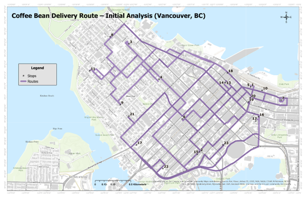
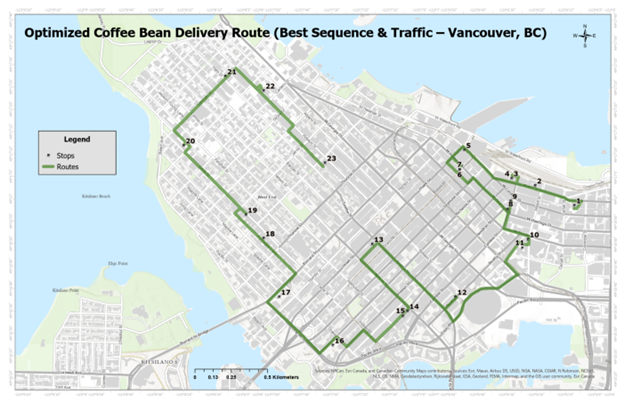
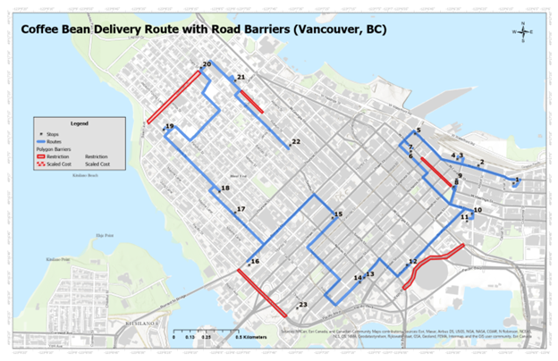

This project utilizes the ArcGIS Pro Network Analyst extension to model and optimize delivery routes for a hypothetical coffee bean distribution service within downtown Vancouver, BC. The primary objective is to determine the most efficient routes for servicing independent cafés, minimizing delivery times and potential operational costs. This analysis addresses the logistical challenges present in urban distribution, where route optimization can significantly impact efficiency. By employing Network Analyst’s Route workflow, I will evaluate the influence of factors such as traffic patterns and road network constraints on delivery performance. Utilizing Business Analyst’s Points of Interest (POI) search, a dataset of independent coffee shop locations was compiled to serve as delivery destinations. This study provides a practical framework for assessing and improving delivery logistics in a dense urban environment.
The selection of delivery locations was conducted using the Business Analyst "Points of Interest" (POI) search tool, specifically targeting independent coffee shops within downtown Vancouver. This methodology ensured the dataset accurately reflected the target demographic for the hypothetical distribution service, focusing on local businesses rather than chain establishments. The downtown Vancouver study area was chosen due to its high concentration of potential delivery points and the complexity of its road network, providing a robust environment for route optimization analysis. Initially, the POI search identified 24 locations. However, review of the attribute table revealed that one location, "Good Earth Coffeehouse," was a branch of a larger chain. To maintain the project's focus on independent cafés, this location was excluded. The final dataset contains 23 delivery points. These points represent the destinations for the route optimization scenarios implemented in the Network Analyst Route workflow.
The analysis is structured into three distinct runs, each designed to evaluate the impact of specific logistical factors on route efficiency:
Establishes a baseline for route solution, disregarding real-time traffic and sequence optimization. This route provides a point of comparison for subsequent analyses.
The route follows the Object ID sequence for the delivery points. As a result, the route is not efficient. The route travels across downtown Vancouver in a disorganized fashion, with backtracking and an illogical sequence of stops.
refines the baseline by incorporating time-dependent traffic considerations and employing an algorithm to find the optimal stop sequence, aiming to minimize travel time during peak hours. The analysis was performed using a 5:00 PM local time setting to simulate rush-hour traffic.
Network Analyst optimized the delivery sequence to minimize travel time during rush hour. The route deviates from the baseline route, strategically avoiding heavily congested streets and favoring alternative routes. This optimization produces a more logical order of stops and eliminated backtracking.
In this final scenario, the route is modified to accommodate simulated road closures. Initially, the route was modified to accommodate closures on W Hastings St, Expo Blvd, and Robson St. To create a more significant impact on the route, closures were also added to Pacific St and Denman St. The route is also constrained to start and end at specified locations. Network Analyst optimizes the sequence of the intermediate stops within these constraints. As a result, the route deviates from the optimized route in Run #2, taking alternative paths around the barriers. This demonstrates the model's adaptability to real-world constraints.
In the final scenario, the route was adjusted to navigate around the introduced barriers, which restricted access through certain areas. Additionally, the starting and ending locations were fixed, while Network Analyst optimized the sequence of intermediate stops within these constraints. As a result, the route deviated from the optimized path in Run #2, taking alternative roads to bypass the barriers. However, due to the dense road network in downtown Vancouver, the overall impact on the route was minimal.
This project demonstrated the capabilities of ArcGIS Pro’s Network Analyst extension in optimizing delivery routes for a hypothetical coffee bean distribution service in downtown Vancouver. Through the execution of three distinct route analyses, I examined the influence of varying parameters on delivery efficiency. The optimized route in Run #2 significantly improved upon the baseline by eliminating redundant route segments and following a logical order of stops. In Run #3. The introduction of barriers altered the route, but the impact was mitigated by Vancouver’s dense road network. The results of this study highlight the critical role of spatial analysis in optimizing urban logistics. The application of route optimization tools, such as ArcGIS Pro’s Network Analysis, improves delivery efficiency and enhances adaptability in real-world scenarios.